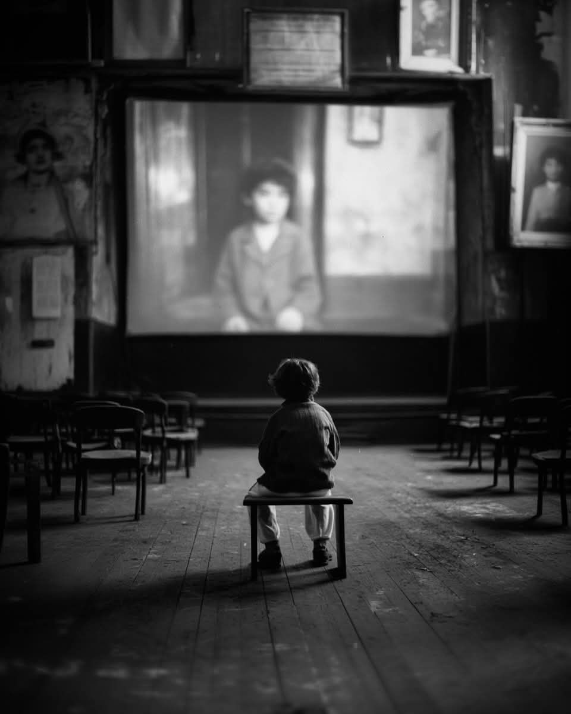

A few close family members came to visit him once or twice, but for the most part, Isai felt he did not exist for them. He did not have a phone until he was sixteen. In middle school, he felt different from his classmates and friends. Many of them had their own phones and wore nice clothes, while Isai wore clothes that had been donated to him and the few pairs of jeans his family bought him.